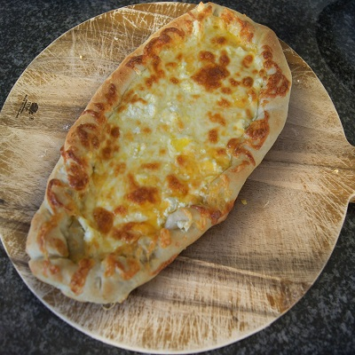

Turkish Cheese Pide
2020-04-12
Ingredients
- 500gm bread flour
- 1 tblspoon yeast
- 1 tblspoon honey
- 1 tsp salt
- 2 tblsp olive oil
- 250 ml or as req water.
Ingredients for the filling:
- 1 cup grated Mozerella
- ½ cup crumbled feta
Preparation
Combine the ingredients of the dough and knead until smooth and elastic. Let rest 45 minutes. Divide in two for two large pides or into four for four medium sized pides. Roll each in a rectangle. Spread the cheese filling over top. And roll the sides in to form a boat shape. Let rise for 10-15 minutes. Brush the sides with olive oil and bake at 230C for 10-15 minutes or until nicely browned.
